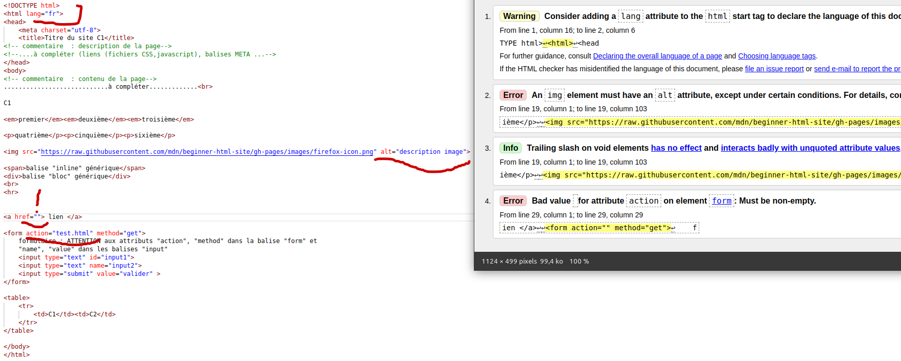
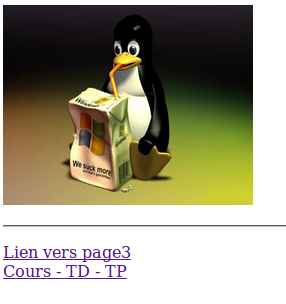
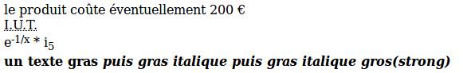
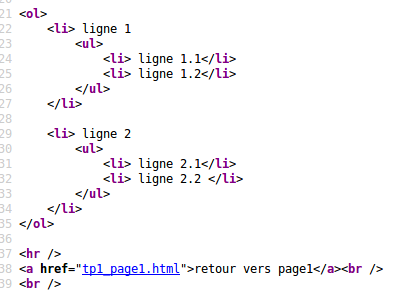
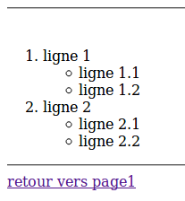

utilisation de l’HTML et du CSS pour disposer correctement des contenus dans un navigateur (css, flexbox, grille) , réalisation d’un menu dans une page,
contenus “responsives” (adaptés aux différents supports)) ….
bootstrap
Utilisation : SAE 5 (projet) : réalisation d’un site Web
TP : 1H30 * 8 semaines : (Millet alain)
Objectif :
présentation des éléments HTML (+ CSS) : formulaire, tableau, barre de navigation.
Présentation d’un serveur web et des outils pour faire du web en python.
Utilisation de Flask pour faire un serveur web.
Présentation des vues sur FLASK (notion de gabarit).
Passage de paramètres dans un formulaire ou un lien, récupération des données dans le script python. (Flask est utilisé pour la deuxième SAE en BDD pour faire des états et des formulaires)
Utilisation : SAE 3 et 4 (projet) : réalisation d’une base de données + système
Évaluation :
aspects esthétiques et techniques du site Web réalisé lors de la SAE 5
un exercice en TD à renvoyer
un exercice en TP à renvoyer (évalué lors de la dernière séance ?), cet exercice sera réutilisé en Base de données pour une autre évaluation
TP noté ou Exercice SQL en salle de partiel ?
TP1: présentation de l’HTML - le langage : les bases, liens …..
Utiliser la norme HTML5, pour les exercices ci dessous.
Une page en HTML se compose d’une structure de base :
<!DOCTYPE html><html><head><meta charset="utf-8"><title>Titre du site</title><!-- commentaire : description de la page--><!--....à compléter (liens (fichiers CSS,javascript), balises META ...--></head><body><!-- commentaire : contenu de la page-->............................à compléter.............</body></html>
Créer un répertoire dans votre répertoire personnel S1/DevInterfacesWeb/tp1 (mkdir -p S1/DevInterfacesWeb/tp1), créer vos fichiers HTML sur ce répertoire.
Créer un fichier test1.html (cd S1/DevInterfacesWeb/tp1 ; touch test.html)
modifier votre page pour qu’elle passe le test du validateur W3C avec succès
🤖 exemple de Modification des erreurs du validateur

Warning 1 : dans la balise <html> il est souhaitable d’ajouter l’attribut lang="fr"
Error 1 : dans la balise <img src=" il est obligatoire d’ajouter l’attribut alt="description de l'image" (pour les non voyants)
Warning 2 : dans la balise <img src=" il n’est plus obligatoire voir souhaitable de ne plus terminer la balise par /> mais par >, malgré que ce soit un éléments vides( les éléments vides n’ont pas de tag de fermeture)
Error 2 et warning 3 : idem
Error 3 : dans la balise <form action="" method=""> l’attribut action="" est obligatoire et ne doit pas etre vide
Utiliser Studio Code ou un autre éditeur pour créer une page page1.html (attention aux extensions, seules les extensions .html sont prises en compte par le serveur Web comme apache)
Utiliser les snippets de Studio Code pour créer la structure HTML de base. Taper html:5 puis [tabulation]. Remplacer le code par le code ci dessus (structure de base) dans le fichier page1.html
Rajouter si ce n’est pas fait l’encodage utf8 (ceci permet d’afficher correctement les caractères éèùà … du langage français): <meta charset="utf-8"> dans la balise <head>
Modifier le titre dans les attributs de la page : <title>TP1 programmation Web</title>, donner le rôle de la balise <title>
Premier Test : Ouvrir le fichier avec le navigateur
Par la suite toutes les modifications se font dans le corps de la page Web ( body ), insérer :
une image servant de lien vers page2.html. (balise img) avec le texte alternatif “mon image devrait apparaître” de largeur 250 pixels et de hauteur 200 pixels et un titre au choix (balise <img src="linux.jpg" alt="mon image devrait apparaitre" title="sympa linux!" />). Remarque le symbole / fin de balise n’est pas obligatoire. Utiliser les attributs CSS width et height pour définir les dimensions de l’image : ajouter l’attribut style="width: 250px;height: 200px" dans la balise image. Cette balise image est placée à l’intérieur d’une balise lien (<a href="nomFichier.html"> <img src="nomfichierImage.jpg" alt="texte alternatif" /></a>)
une ligne horizontale. (balise <hr>)
un lien (interne) intitulé “lien vers page 3” vers page3.html (balise <a href="nomFichier.html"> texte du lien </a>)
un lien (externe) <a href="http://cours-info.iut-bm.univ-fcomte.fr" title="liens sur les cours TDs Tps du département informatique"> Cours – TD – TP </a>, l’attribut : title ajoute une information lorsque la souris est sur le lien.
rajouter une icône dans la partie head : ajouter l’intruction <link rel="icon" type="image/x-icon" href="iconeweb.ico">. Pour plus d’information sur les favicon, voir cette documentation, voir de la documentation de W3C.
aperçu écran de la page “page1.html”
Valider votre page sur le site http://validator.w3.org/
Remarque : [Outils/Développement Web/Code source de la page] ou [Ctrl u] affiche en Rouge les erreurs détectées par le “parseur” du navigateur
Remarque : Certaines erreurs peuvent être liées au fait que l’on ne peut pas mettre certaines balises dans d’autres balises. Vous pouvez vous aider des sites présentés lors de la configuration de votre bureau pour connaître les balises parents/enfants.
Page 2
Créer une page de nom page2.html qui contient :
un lien avec le texte suivant: «retour à la page 1 d’accueil» et une image pour retourner sur la page 1
une ligne horizontale (balise <hr>)
un lien sur le site http://www.google.fr en utilisant l’attribut target pour ouvrir un nouvel onglet dans le navigateur (attribut target="_blank"). Mettre à l’intérieur de ce lien l’image de google. Remarque importante sur les liens: les liens utilisent des URLs, voici une page avec quelques exemples d’URLs: http://defeo.lu/aws/lessons/url , une erreur classique est d’oublier le http:// devant une URL absolue.
dans la page HTML, dans la balise <head> suivi de la valise <style> (rare, utilisation essentiellement pédagogique car dans le même fichier que l’HTML)
de façon exceptionnelle dans une balise pour forcer le style grâce à l’attribut style
Cette structure s’appelle un ensemble de règles (ou seulement « une règle »)
p {color: yellow;}p {color: blue;}p em {color: green;}.maclasse1 {color: red;}#monid1 {color: yellow;}
Créez un fichier tp1_exemple1.html
<!DOCTYPE html><html><head><meta charset="utf-8"><link href="exemple1.css" rel="stylesheet" type="text/css"></head><body><p> "texte dans p"<em>"texte dans p em"</em></p><p class="maclasse1"> "texte dans p.maclasse1"<em class="maclasse1">"texte dans p.maclasse1 em"</em></p><p class="maclasse1" id="monid1"> "texte dans p#monid1.maclasse1"<em>"texte dans p#monid1.maclasse1 em"</em></p><p class="maclasse1" id="monid1" style="color: brown;"> "texte dans dans p#monid1.maclasse1"</p></body></html>
Testez le code ci-dessus
enlevez la classe “maclasse1” dans la balise “em”
ajoutez !important dans le premier style de la balise “p”
Attention à l’ordre des balises : <link href="xxxxxx.css" rel="stylesheet" type="text/css">
Page 3 (pour les plus rapides)
Créer une page de nom page3.html qui contient (de haut en bas) :
le texte noir suivant en utilisant les méta caractères pour les caractères : û é €:
“le produit coûte éventuellement 200 €”
IUT (en utilisant la balise <abbr> pour afficher «Institut Universitaire de Technologie» si la souris est dessus)
e-1/x * i5 (voir aperçu écran en utilisant les balises SUB et SUP)
un texte gras puis gras italique puis gras italique gros (en utilisant les balises <i><b><strong>)
Aidez vous de cet exemple :
aperçu écran du début de la page “page3.html”
REMARQUE : la lettre b de la balise <b> signifie bold (gras) alors que <strong> signifie important (de même <em> signifie emphase : mise en valeur). Exemple de site web qui parle de l’intérêt sémantique de ces balises.
Compléter la page HTML avec :
Une ligne horizontale.
2 listes à puces imbriquées dans une autre liste numérotée. Laisser les formes des puces par défaut, en HTML les mises en forme se font avec du CSS) :


REMARQUE : En langage HTML pour imbriquer une liste dans une autre liste, celle ci doit être imbriquée dans une balise <li>. La signification de ol ou ul ne définit pas forcément une liste à puces ou numérotée mais juste une liste d’éléments ordonnés ou non ordonnés (ul:unordered list, ol: ordered list).